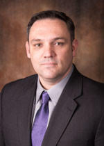
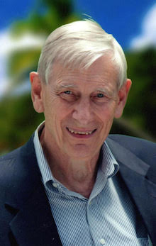

Board of Directors:
Dr. Seals'

Tom Seals teaches Bible courses at Lipscomb University. He received his BA in Biblical languages from Lipscomb University in 1971, his MTS degree from Wesley Seminary in Washington, D.C. in 1976, and his DMin degree from Memphis Theological Seminary in 1999. Tom has completed post-doctoral work in Pentateuchal Studies and in Religion, Politics, and Social Issues from Vanderbilt University... Read More...
Chad J. Staggs

Chad J. Staggs is the director of Veteran Services.
Staggs oversees the office, as well as our veteran students’ personal, professional,
academic and spiritual needs. Focused on the transitional process into the classroom
Staggs facilitates, collaborates and provides key leadership connecting university faculty
and staff in addition to community partnerships that have a direct
impact on veteran student’s success.
Read More...
Richard "Dick" Peugot

Dick Peugeot is a former member of the Lipscomb University Board of Trust having served
as Board Secretary and Treasurer. Dick and Mary Ann are the founders of the Peugeot
Center for Engineering Service to Developing Communities through which engineering
mission trips are conducted in conjunction with Lipscomb’s College of Engineering.
An electrical engineering graduate of the University of Tennessee, Dick served as president
of Ridge, Inc. an Atlanta company that designed and built custom industrial real-time X-ray
imaging systems. While living in Atlanta Dick served as an elder for the Decatur Church of
Christ and the Northlake Church of Christ as well as a board member for Greater
Atlanta Christian School. Dick has three children and seven children.
Read More...
Butch Baker
Butch Baker has lead HoriPro’s Nashville office for over a decade, claiming an
impressive track record of success. A Nashville resident since 1979, Butch Baker
began his career in music as a recording artist, inking 4 major record deals.
His transition to the business side of music came by working as an independent
A&R rep for Giant and Sony Records. Ambitiously continuing his love for music
and its business, Butch expanded in to music production and song plugging.
Finding a true passion for music publishing, Butch was soon running Nashville’s
Encore Publishing. With this vast and varied amount of experience under his belt,
Butch joined the HoriPro team in 2005. Additionally, Butch attended Tennessee
Military Academy, was in ROTC at University of Tennessee Chattanooga and then
stationed at Quantico, Virginia with the Marine Corps.
Read More...
Chris Adams
Chris is an Investment Advisor at Pinnacle Asset Management & Raymond James
Financial Services, Inc. He is a graduate of Lipscomb University and received his M.A.
from Middle Tennessee State University, where he wrote his thesis about the U.S. Army
Chaplaincy in World War II. He also is Chairman of the Inter-American Bible Institute
in Lima, Peru and is also a member of the board of directors of the ChristianUrban
Development Association in Arequipa, Peru. He and his wife Theresa have 2 daughters.
Read More...